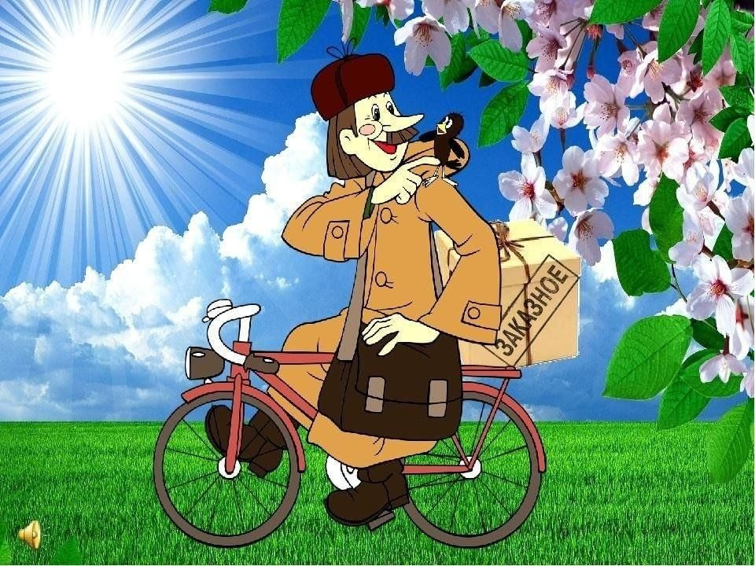

Дядя Фёдор, пёс и кот - продолжение 10.
Эдуард Успенский
Глава восемнадцатая. Письмо почтальона Печкина
А папа с мамой совсем уж соскучились без дяди Фёдора. И жизнь им не мила стала. Раньше у них всё не было времени дядей Фёдором заниматься: хозяйство их заедало, телевизор и газеты вечерние. А теперь у них столько времени объявилось, что на двух дядей Фёдоров хватило бы. Не знали, куда это время девать. Они всё время про дядю Фёдора говорили и в почтовый ящик заглядывали — нет ли писем из деревень Простоквашино.
Мама говорит:
— Я теперь многое поняла. Если дядя Фёдор найдётся, я для него няню заведу. Чтобы ни на шаг от него не отходила. Он тогда никуда не убежит.
— И ни капельки ты не права, — говорит папа. — Он же мальчик. Ему нужны приятели, чердаки, шалаши разные. А ты из него барышню кисельную делаешь.
— Не кисельную, а кисейную, — поправляет мама.
— Да хоть клюквенную! — кричит папа. — Он же мальчик! Сейчас даже девочки пошли шурум-бурумные! Я вот мимо детского сада проходил, когда там ребят спать укладывали. Так они на кроватях чуть не до потолка прыгали. Как кузнечики! Из штанишек выскакивали. Мне и самому так прыгать захотелось!
— Давай, давай! — говорит мама. — Прыгай до потолка! Выскакивай из штанишек! Только сына я тебе портить не позволю! И никаких собак у нас дома не будет! И никаких кошек! Уж в крайнем случае я на черепаху соглашусь в коробочке.
И так они каждый день разговаривали. И мама всё строже и строже становилась. Она решила ни папе, ни дяде Фёдору воли не давать. А тут письма стали приходить от почтальонов. Сначала одно. Потом ещё одно. Потом сразу десять. Но хороших новостей не было. Письма были такие:
«Здравствуйте, папа и мама!
Пишет вам почтальон из деревни Простоквашино. Зовут меня Вилкин Василий Петрович. Работаю я хорошо.
Вы спрашиваете, нет ли в нашей деревне мальчика дяди Фёдора. Отвечаем: такого мальчика у нас нет.
Есть один человек, которого зовут Фёдор Фёдорович. Но это дедушка, а не мальчик. И он вам, наверное, не нужен.
Края у нас хорошие и много разных просторов. Приезжайте к нам жить и работать. Поклон вам от всех простоквашинцев.
С большим приветом — почтальон Вилкин».
Или такие:
«Уважаемые папа и мама!
Вы пишете, что от вас ушёл дядя. Ну и пусть. Но при чём здесь мальчик? Или он ушёл мальчиком, а вырос в дядю? Тогда не понятно, кому подарки.
Напишите нам со старухой, чтобы мы знали. Только побыстрее, а то мы собираемся в дом отдыха во вторую смену. Мы очень хотим знать ответ на эту загадочную тайну.
Почтальон Ложкин со старухой».
Много было разных писем, а нужного письма не было.
Мама говорит:
— Не найдём мы дядю Фёдора. Уже двадцать одно письмо пришло, а про него ни слова.
Папа её успокаивает:
— Ничего, ничего. Подождём двадцать второе.
И вот оно пришло. Мама раскрыла и глазам своим не поверила.
«Здравствуйте, папа и мама!
Пишет вам почтальон Печкин из деревни Простоквашино. Вы спрашиваете про мальчика дядю Фёдора. Вы про него ещё заметку в газете писали. Этот мальчик живёт у нас. Я недавно заходил к нему посмотреть, все ли у них плитки выключены, а его корова меня на дерево загнала.
А потом я у них чай пил и незаметно пуговицу отрезал от курточки. Посмотрите, ваша ли это пуговица. Если пуговица ваша, значит, и мальчик ваш».
Мама вынула пуговицу из конверта и как закричит:
— Это моя пуговица! Я её сама дяде Фёдору пришивала!
Папа тоже как закричит:
— Ура!
И маму к потолку подбросил от радости. А очки у него как слетят! И не видит он, где маму ловить. Хорошо, что она на диван прилетела, а то бы папе досталось.
И она стала дальше читать:
«Всё у вашего мальчика хорошо. И трактор есть, и корова.
Он всяких зверей кормит. И кот у него есть хитрый-прехитрый. Я из-за этого кота в изолятор попал: он меня молоком угостил, от которого с ума сходят.
Вы можете приехать за вашим мальчиком, потому что он ничего не знает. И я ему ничего не скажу. А мне привезите велосипед. Я на нём буду почту развозить. И от новых штанов я бы тоже не отказался.
До свиданья.
Почтальон деревни Простоквашино, Можайского района, Печкин».
И мама с папой после этого письма стали в дорогу готовиться, а дядя Фёдор ничего не знал.
Глава девятнадцатая. Посылка
По утрам на улице уже лёд был — зима приближалась. И каждый своим делом занимался. Шарик по лесам с фотоаппаратом бегал. Дядя Фёдор кормушки для птиц и лесных зверей мастерил. А Матроскин Гаврюшу обучал. Учил его всему. Палку в воду бросит, а телёнок принесёт. Скажет ему: «Лежать!» — и Гаврюша лежит. Прикажет ему Матроскин: «Взять! Куси!» — тот сразу бежит и бодаться начинает.
Прекрасный сторожевой бык из него получался. И вот однажды, когда каждый из них своё дело делал, к ним почтальон Печкин пришёл.
— Здесь кот Матроскин живёт?
— Я Матроскин, — говорит кот.
— Вам посылка пришла. Вот она. Только я вам её не отдам, потому что у вас документов нету.
Дядя Фёдор спрашивает:
— Зачем же вы её принесли?
— Потому что так положено. Раз посылка пришла, я должен её принести. А раз документов нету, я не должен её отдавать.
Кот кричит:
— Отдавайте посылку!
— Какие у вас документы? — говорит почтальон.
— Лапы, хвост и усы! Вот мои документы.
Но Печкина не переспоришь.
— На документах всегда печать бывает и номер. Есть у вас номер на хвосте? А усы и подделать можно. Придётся мне посылку обратно относить.
— А как же быть? — спрашивает дядя Фёдор.
— Не знаю как. Только я к вам теперь каждый день приходить буду. Принесу посылку, спрошу документы и обратно унесу. Так две недели. А потом посылка в город уедет. Раз её не получил никто.
— И это правильно? — спрашивает мальчик.
— Это по правилам, — отвечает Печкин. — Я, может, вас очень люблю. Я, может, плакать буду. А только правила нарушать нельзя.
— Не будет он плакать, — говорит Шарик.
— Это уж моё дело, — отвечает Печкин. — Хочу — плачу, хочу — нет. Я человек свободный. — И он ушёл.
Матроскин от сердитости хотел на него Гаврюшу натравить, но дядя Фёдор не позволил. Он сказал:
— Я вот что придумал. Мы найдём ящик, такой, как у Печкина, и всё на нём напишем. И наш адрес, и обратный. И печати сделаем, и верёвками перевяжем. Печкин придёт, мы его за чай посадим, а ящики возьмём и переменим. Посылка у нас останется, а пустой ящик к учёным отправится.
— Зачем же пустой? — говорит Матроскин. — Мы в него грибов положим или орехов. Пусть учёные подарок получат.
— Ура! — кричит Шарик. И Гаврюшу позвал от радости: — Гаврюша, ко мне! Дай лапу.
Гаврюша ногу протянул и хвостиком виляет, совсем как собака.
Так они и сделали. Достали ящик посылочный, положили в него грибы и орехи. И письмо положили:
«Дорогие учёные!
Спасибо за посылку. Желаем вам здоровья и изобретений. А особенно всяких открытий».
И подписались:
«Дядя Фёдор — мальчик.
Шарик — охотничий пёс.
Матроскин — кот по хозяйственной части».
Потом они адрес написали, всё как надо сделали и стали Печкина ждать. Они даже ночью заснуть не могли. Всё думали: получится у них или не получится.
Утром кот пирогов напёк. Дядя Фёдор чаю заварил. А Шарик с Гаврюшей всё на дорогу бегали смотреть, идёт Печкин или не идёт. И вот Шарик примчался:
— Идёт!
Печкин подошёл и в дверь постучал.
Хватайка со шкафа спрашивает:
— Кто там?
Печкин отвечает:
— Это я, почтальон Печкин. Принёс посылку. Только я вам её не отдам. Потому что у вас документов нету.
Матроскин на крыльцо вышел и спокойно так говорит:
— А нам и не надо. Мы бы эту посылку и сами не взяли. Зачем нам гуталин?
— Какой такой гуталин? — удивился Печкин.
— Обыкновенный. Которым ботинки чистят, — объясняет кот. — В этой посылке наверняка гуталин.
Печкин даже глаза вытаращил:
— Это кто же вам столько гуталина прислал?
— Это мой дядя, — объясняет кот. — Он у сторожа живёт на гуталинном заводе. У него гуталина завались! Не знает, куда его девать. Вот и шлёт кому попало!
Печкин даже растерялся. А тут Шарик посылку понюхал и говорит:
— Нет, там совсем не гуталин.
Печкин обрадовался:
— Вот видите! Не гуталин.
— Там мыло! — говорит Шарик.
— Какое ещё мыло?! — кричит Печкин. — Совсем вы мне голову заморочили! Зачем вам столько мыла прислали? Что у вас, баня открывается?
— Если там мыло, — говорит дядя Фёдор, — значит, его моя тётя прислала, Зоя Васильевна. Она на мыльной фабрике испытателем работает. Мыло испытывает. Ей ещё в автобус садиться нельзя. Особенно в дождик.
— Это ещё почему? — спрашивает Печкин.
— В дождик она вся мыльной пеной покрывается. Людей в автобусе много, как они надавят, так она и выскальзывает каждый раз. А однажды она по лестнице ехала с шестого этажа до первого.
Тут уже Шарик спросил:
— Почему?
— Потому что пол мыли. Лестница мокрая была. А она-то ведь скользкая, намыленная.
Печкин послушал и говорит:
— Мыло там или не мыло, а я вам посылку не дам! Потому что у вас документов нету. И вообще напрасно вы мне голову морочите. Я вам не дурачок! — и сам себя по голове постучал.
А галчонок услышал стук и спрашивает:
— Кто там?
— Это я, почтальон Печкин. Принёс для вас посылку. То есть не принёс, а уношу. А ты, говорилка, помалкивай себе на шкафу!
Кот ему говорит:
— Ладно вам сердиться. Идите лучше чай пить. У меня пироги на столе.
Печкин сразу согласился:
— Я очень люблю пироги. И вообще мне у вас нравится.
Они его к столу повели. Только Печкин хитрый. Он с посылкой не расстаётся. Даже сел на неё вместо стула.
Тогда дядя Фёдор стал конфеты на другой конец стола ставить. Чтобы Печкин за ними потянулся и с посылки привстал.
Но Печкина не проведёшь. Он с посылки не встаёт, а просит:
— Подайте мне вот те конфеты. Очень они замечательные!
Того и гляди, конфеты съест. Но тут всех Хватайка выручил.
Печкин две конфеты себе в нагрудный карман положил, чтобы домой взять.
А галчонок сел к нему на плечо и конфеты вытащил.
Почтальон кричит:
— Отдавай! Это мои конфеты!
И за галчонком побежал. Хватайка — на кухню. Печкин — за ним.
Тут Матроскин посылку и подменил. Прибежал Печкин с конфетами и снова на посылку сел.
А посылка уже не та.
Наконец они весь чай выпили и пироги съели. А Печкин всё равно сидит. Он думает, что ему ещё что-нибудь дадут. Шарик ему намекает:
— Не пора ли вам на почту идти? А то скоро она закроется.
— И пускай закрывается. У меня свой ключ есть.
Матроскин тоже говорит:
— Мне кажется, у вас дома плитка не выключена. Очень может быть, что пожар будет.
— А у меня плитки нет, — отвечает Печкин.
Шарик тогда тихонько спрашивает у дяди Фёдора:
— Можно, я его просто укушу? Чего он не уходит?
А у Печкина слух хороший был. Он и услышал.
— Ах вот как! — говорит. — Я к вам со всей душой, а вы меня кусать собираетесь?! Ну и пожалуйста! Больше я посылку носить не буду. Я её завтра же назад пошлю.
А им только этого и надо было.
И как только он ушёл, они дверь заперли и стали посылку распечатывать.